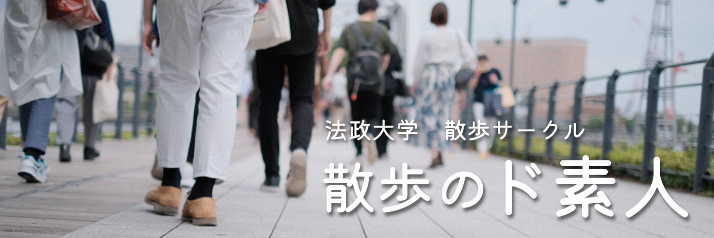

2021年度第二新歓について
07/12 2021
本日から第二新歓が開催され、一部団体様がキャンパス中央広場にて机出しをしています。散歩サークルは今回も机出しはしません。
もし、サークル内容に興味がある方はTwitterのDMやメール (shu.yoshioka.4n@stu.hosei.ac.jp ：2021年度代表宛て) へご一報下さい。
法政大学新聞に本サークルが取り上げられました
07/16 2021
コロナ禍で多くのサークルが活動制限を強いられている中、本サークルの活動領域を広げるべく、法政大学新聞の取材に応じました。
法政大学生の皆様は、市ヶ谷キャンパスボアソナードタワーB1Fのエレベーター近くにある、新聞を手に取ってみてください！
新しい背景画を作成しました
06/03 2021

散歩サークルTwitterでは長年同じ背景画を使用していましたが、今回新たな背景画に一新しました。どうぞご覧くださいませ。
法政大学公認団体者向けサークル会計・補助金説明会に参加しました
12/15 2020
先日市ヶ谷キャンパス外濠校舎で開催されたサークル会計説明会に本サークルも参加してきました。本年度は全く活動できなかったので、本サークルは補助金を頂くことはできないです。残念。
今年度のサークル活動報告書のお知らせ
11/25 2020
今年度の本サークルにつきまして、表題にもあります『活動報告書』に記載がある通り、一切活動いたしておりません。COVID-19の世界的流行に影響を受けた形になります。どうかご容赦くださいませ。
名簿作成にご協力くださいませ
11/20 2020
来年度のサークル団体登録に際しまして、皆さんの団員名簿を作成する必要があるため、以下のGoogleフォームよりご回答のご協力をお願いいたします。
こちらよりフォーム入力お願い致します！
※法政大学のアカウントでログインする必要があります。